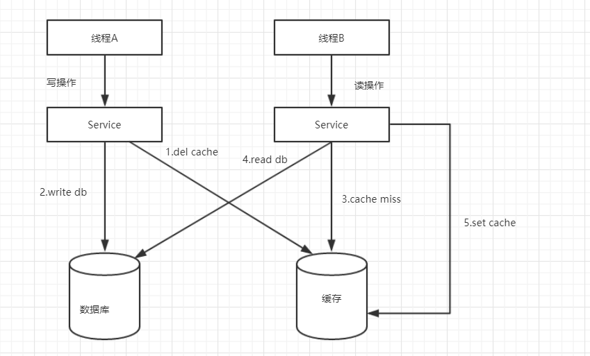
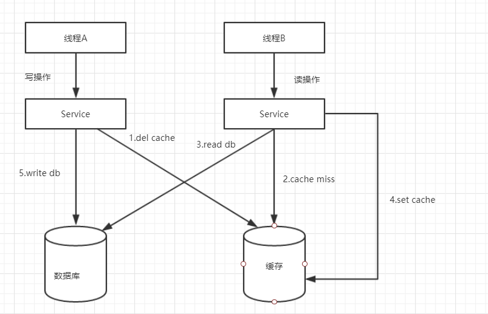
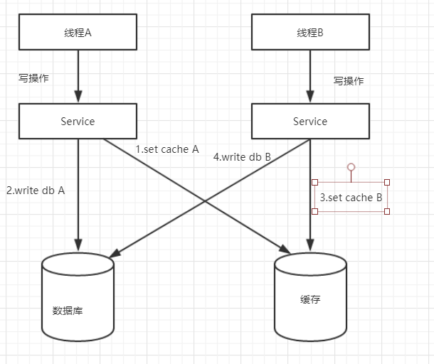
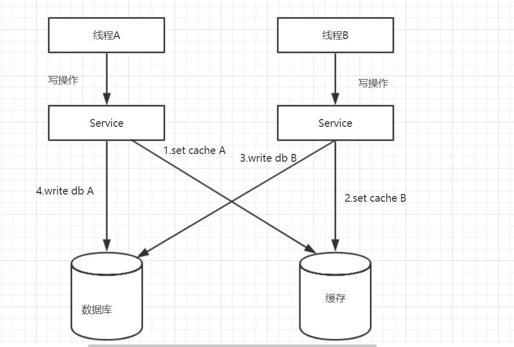
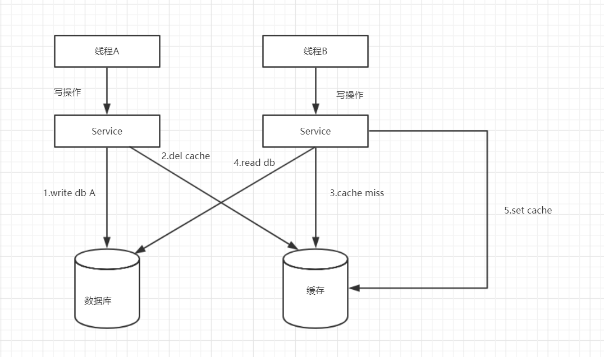
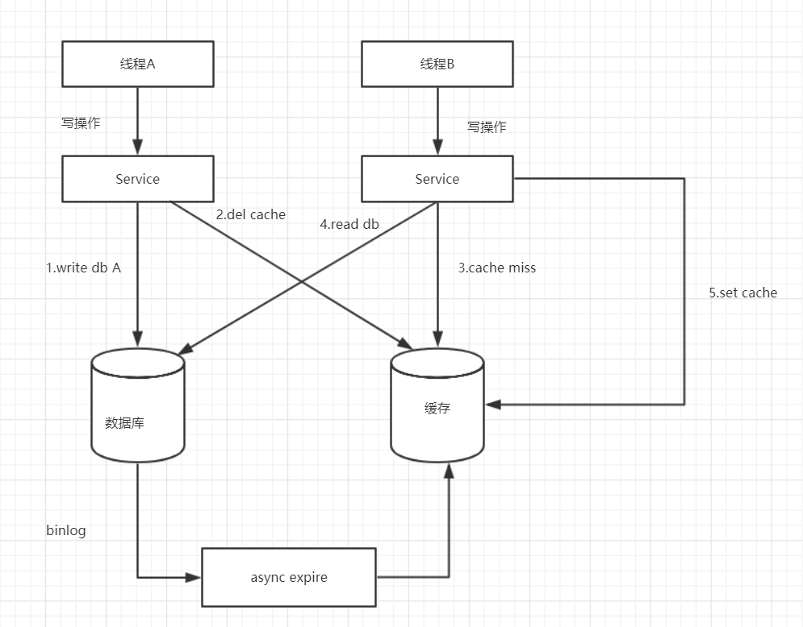
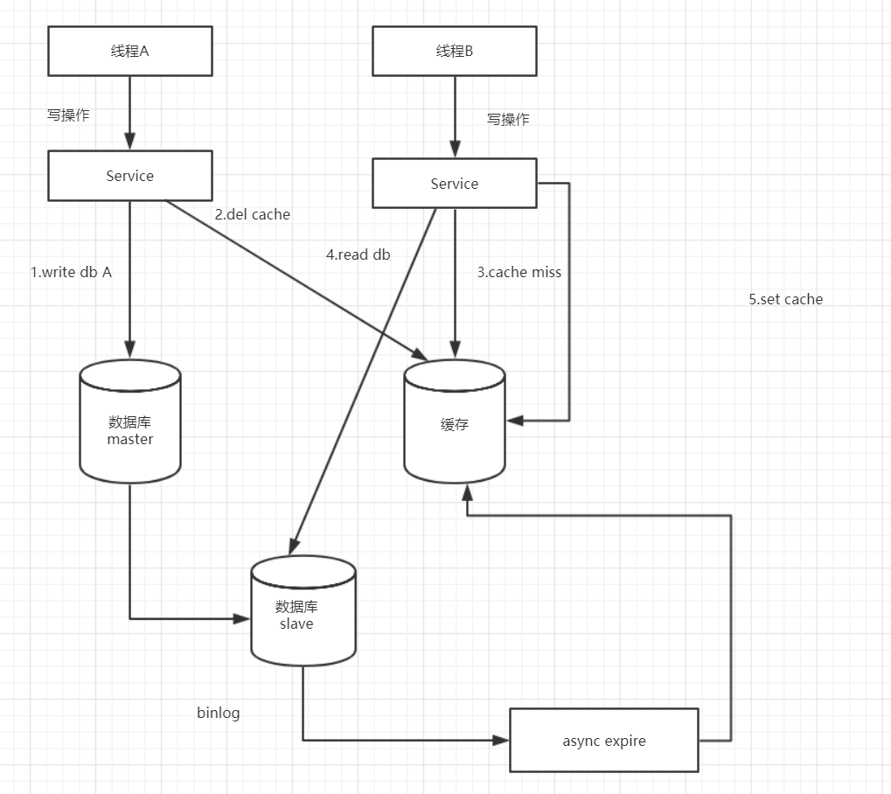

在分布式系统中，缓存和数据库同时存在时，如果有写操作的时候，先操作数据库还是先操作缓存呢？先思考一下，可能会存在哪些问题，再往下看。下面我分几种方案阐述。
假设有一写（线程A）一读（线程B）操作，先操作缓存，在操作数据库。，如下流程图所示：

1）线程A发起一个写操作，第一步del cache
2）线程A第二步写入新数据到DB
3）线程B发起一个读操作，cache miss，
4）线程B从DB获取最新数据
5）请求B同时set cache
这样看，没啥问题。我们再看第二个流程图，如下：

1）线程A发起一个写操作，第一步del cache
2）此时线程B发起一个读操作，cache miss
3）线程B继续读DB，读出来一个老数据
4）然后老数据入cache
5）线程A写入了最新的数据
OK，酱紫，就有问题了吧，老数据入到缓存了，每次读都是老数据啦，缓存与数据与数据库数据不一致。
双写操作，先操作缓存，在操作数据库。

1）线程A发起一个写操作，第一步set cache
2）线程A第二步写入新数据到DB
3）线程B发起一个写操作，set cache，
4）线程B第二步写入新数据到DB
这样看，也没啥问题。，但是有时候可能事与愿违，我们再看第二个流程图，如下:

1）线程A发起一个写操作，第一步set cache
2）线程B发起一个写操作，第一步setcache
3）线程B写入数据库到DB
4）线程A写入数据库到DB
执行完后，缓存保存的是B操作后的数据，数据库是A操作后的数据，缓存和数据库数据不一致。
一写（线程A）一读（线程B）操作，先操作数据库，再操作缓存。

1）线程A发起一个写操作，第一步write DB
2）线程A第二步del cache
3）线程B发起一个读操作，cache miss
4）线程B从DB获取最新数据
5）线程B同时set cache
这种方案没有明显的并发问题，但是有可能步骤二删除缓存失败，虽然概率比较小，优于方案一和方案二，平时工作中也是使用方案三。
综上对比，我们一般采用方案三，但是有没有完美全解决方案三的弊端的方法呢？
这个是方案三的改进方案，都是先操作数据库再操作缓存，我们来看一下流程图：

通过数据库的binlog来异步淘汰key，以mysql为例
可以使用阿里的canal将binlog日志采集发送到MQ队列里面，然后通过ACK机制
确认处理 这条更新消息，删除缓存，保证数据缓存一致性。
但是呢还有个问题，如果是主从数据库呢？
主从DB问题：因为主从DB同步存在同时延时时间如果删除缓存之后，数据同步到备库之前已经有请求过来时，会从备库中读到脏数据，如何解决呢？解决方案如下流程图：

综上所述，在分布式系统中，缓存和数据库同时存在时，如果有写操作的时候，先操作数据库，再操作缓存。如下：
（1）读取缓存中是否有相关数据
（2）如果缓存中有相关数据value，则返回
（3）如果缓存中没有相关数据，则从数据库读取相关数据放入缓存中key->value，再返回
（4）如果有更新数据，则先更新数据，再删除缓存
（5）为了保证第四步删除缓存成功，使用binlog异步删除
（6）如果是主从数据库，binglog取自于从库
（7）如果是一主多从，每个从库都要采集binlog，然后消费端收到最后一台binlog数据才删除缓存
欢迎大家关注，大家一起学习，一起讨论哈。